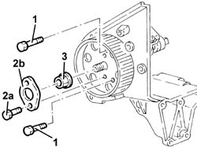
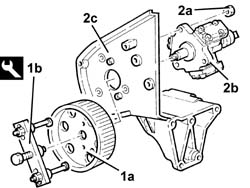

1060E42 Pressure pump support - Dismantling and reassembly at the bench
- Path
- Procedures > 10 ENGINE > 1060 DIESEL FUEL INJECTION SYSTEM > 1060E DIESEL PRESSURE PUMP > 1060E42 Pressure pump support - Dismantling and reassembly at the bench
- Kind
- repair procedure (removal / refitting; the operation number is the code)
- Applies to
- engines: 2.4 JTD 10V; all production periods
- Interactive page
- https://sloeber94.github.io/elrnDB-lThss/en/#/498142
Applies to: engines: 2.4 JTD 10V; all production periods
 Removing
Removing
 Refitting
Refitting- Position the pressure pump support in a vice fitted with protective jaws.
1. Lock the rotation of the pressure pump drive pulley using two bolts.
2. Undo the bolts (2a) and remove the safety flange (2b).
3. Undo the pressure pump drive pulley nut.
- Undo the two bolts for locking the rotation of the pressure pump drive pulley fitted previously.

Applies to: engines: 2.4 JTD 10V; all production periods
1. Remove the pressure pump drive pulley (1b) using tools (1b) and (1c).
 | Description | Code | Function |
|---|---|---|---|
1b | Extractor | 1.860.954.002 | Pressure pump control pulley removal |
2. Undo the nuts (2a) and remove the pressure pump (2b) from the support (2c).

Applies to: engines: 2.4 JTD 10V; all production periods
Refitting
Removing- Fit the pressure pump on the support and fasten it using the nuts.
 | Value - daNm | Fastening | Component | Ø |
|---|---|---|---|---|
. | 2.3 ÷ 3.3 | Nut | INJECTION PRESSURE PUMP MOUNT | M8 |
- Fit the pressure pump drive pulley.
- Lock the rotation of the pressure pump drive pulley using two bolts.
- Tighten the nut fixing the pressure pump drive pulley to the recommended torque.
| Value - daNm | Fastening | Component | Ø |
|---|---|---|---|---|
. | 4.6 ÷ 6.6 | Nut | PULLEY WITH PRESSURE PUMP | M14 |
- Fit the safety flange tightening the fixing bolts.